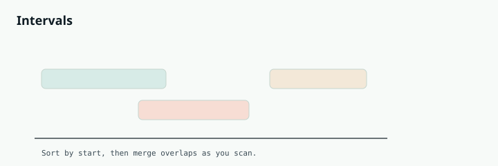

Competitive Programming
Chapter 15
Intervals

T O O L B O X
An interval is just a start and an end, like a meeting from 2 to 4. Interval problems are about overlaps: merging them, counting how many overlap at once, or fitting them together. The universal first move is almost always the same: sort by start time. before: overlapping intervals after: merged two overlapping ranges become one Sort by start, then walk through and fuse anything that overlaps the current range.
R E A C H F O R I N T E R V A L T E C H N I Q U E S W H E N Y O U S E E
"Merge overlapping intervals", "insert a new interval", "can a person attend all meetings", "minimum meeting rooms needed", "maximum non-overlapping intervals". Ranges of time, ranges of numbers, or segments on a line are all intervals.
Worked example: merge intervals
Sort the intervals by start time. Walk through them one by one, keeping a current merged interval. If the next interval starts before the current one ends, they overlap, so stretch the current end to cover it. If it starts after, there is a gap, so push the current interval and start a new one.
def merge(intervals):
intervals.sort(key=lambda x: x[0]) # sort by start
merged = [intervals[0]]
for start, end in intervals[1:]:
last = merged[-1]
if start <= last[1]: # overlaps the current interval
last[1] = max(last[1], end) # stretch the end
else:
merged.append([start, end]) # no overlap, new interval
return merged
int[][] merge(int[][] intervals) {
Arrays.sort(intervals, (a, b) -> a[0] - b[0]); // sort by start
List<int[]> merged = new ArrayList<>();
merged.add(intervals[0]);
for (int i = 1; i < intervals.length; i++) {
int[] last = merged.get(merged.size() - 1);
if (intervals[i][0] <= last[1]) { // overlaps
last[1] = Math.max(last[1], intervals[i][1]);
} else {
merged.add(intervals[i]); // new interval
}
}
return merged.toArray(new int[0][]);
}
Worked example: minimum meeting rooms
Given meeting time intervals, how many rooms do you need so none overlap in the same room? The clever version uses a min-heap of end times. Sort meetings by start. For each meeting, if the earliest-ending room is free by the time it starts, reuse that room; otherwise open a new room. The heap size at its peak is the answer.
import heapq
def min_meeting_rooms(intervals):
if not intervals:
return 0
intervals.sort(key=lambda x: x[0]) # by start time
ends = [] # min-heap of room end times
for start, end in intervals:
if ends and ends[0] <= start: # a room freed up in time
heapq.heapreplace(ends, end) # reuse it
else:
heapq.heappush(ends, end) # need a new room
return len(ends)
int minMeetingRooms(int[][] intervals) {
if (intervals.length == 0) return 0;
Arrays.sort(intervals, (a, b) -> a[0] - b[0]); // by start
PriorityQueue<Integer> ends = new PriorityQueue<>(); // room end times
for (int[] meeting : intervals) {
if (!ends.isEmpty() && ends.peek() <= meeting[0]) {
ends.poll(); // reuse the freed room
}
ends.offer(meeting[1]); // occupy a room until its end
}
return ends.size();
}
S O R T B Y T H E R I G H T E D G E
Two intervals overlap when one starts before the other ends. For merging, sort by start. But for "maximum number of non-overlapping intervals" you sort by end time instead, then greedily keep each interval whose start is after the last kept end. Choosing the correct sort key is half the battle in interval problems.
Deeper Intuition
Why sorting first makes intervals easy
Almost every interval problem starts with a sort, because once intervals are in order you can sweep through them once and make a local decision at each step. Sort by start when you are merging, since overlaps become adjacent. Sort by end when you are selecting the most non-overlapping intervals. Choosing that sort key correctly is most of the battle, and the sweep that follows is short and mechanical. walk through before, overlapping, and after in three passes existing existing new interval merged Insert by handling the intervals entirely before the new one, then merging the overlapping ones, then the rest.
Another worked example: Insert Interval
Given sorted, non-overlapping intervals and a new one, insert it and merge. Handle three groups in order: intervals that end before the new one begins are copied as is, intervals that overlap are merged into the new one by widening its bounds, and the rest are copied after.
def insert(intervals, new):
result = []
i, n = 0, len(intervals)
while i < n and intervals[i][1] < new[0]: # entirely before
result.append(intervals[i]); i += 1
while i < n and intervals[i][0] <= new[1]: # overlapping, merge
new[0] = min(new[0], intervals[i][0])
new[1] = max(new[1], intervals[i][1])
i += 1
result.append(new)
while i < n: # entirely after
result.append(intervals[i]); i += 1
return result
int[][] insert(int[][] intervals, int[] newInterval) {
List<int[]> result = new ArrayList<>();
int i = 0, n = intervals.length;
while (i < n && intervals[i][1] < newInterval[0]) // before
result.add(intervals[i++]);
while (i < n && intervals[i][0] <= newInterval[1]) { // overlap
newInterval[0] = Math.min(newInterval[0], intervals[i][0]);
newInterval[1] = Math.max(newInterval[1], intervals[i][1]);
i++;
}
result.add(newInterval);
while (i < n) result.add(intervals[i++]); // after
return result.toArray(new int[0][]);
}
GOING DEEPER
What kinds of problems this solves
U S E T H I S P A T T E R N F O R
Anything about ranges on a line: merging overlaps, inserting a new range, counting how many overlap at once, finding free time, or picking the most non-overlapping ranges. Sorting is almost always the first move.
Problem type Classic examples Merge and insert Merge Intervals, Insert Interval, Interval List Intersections Overlap counting Meeting Rooms, Meeting Rooms II, My Calendar I, Employee Free Time Selection and scheduling Non-overlapping Intervals, Minimum Number of Arrows to Burst Balloons
The algorithm, in a bit more detail
Sort by start time, then sweep left to right keeping a current range. If the next interval starts before the current one ends, they overlap, so extend the current end. If it starts later, there is a gap, so close off the current range and open a new one. That single sweep merges everything in O(n log n), dominated by the sort.
For counting how many intervals are active at once, a min heap of end times works: for each meeting in start order, free any room whose end has already passed, then take a room. The largest the heap ever grows is the answer, which is how minimum meeting rooms is solved.
Variations you will run into
The sort key changes with the goal. Sort by start to merge. Sort by end to select the most non- overlapping intervals greedily. A sweep line that treats each start as plus one and each end as minus one turns overlap counting into a running sum.
Edge cases and gotchas
Decide whether touching endpoints count as overlapping, since problems differ and it changes your comparison.
Sort before you sweep, and pick start versus end based on whether you are merging or selecting.
When inserting into an already sorted list, handle the intervals fully before, overlapping, and fully after separately.
Watch empty input and a single interval, the usual boundary cases.